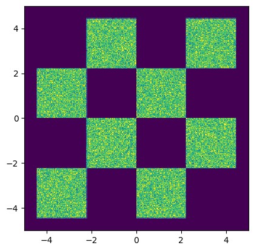
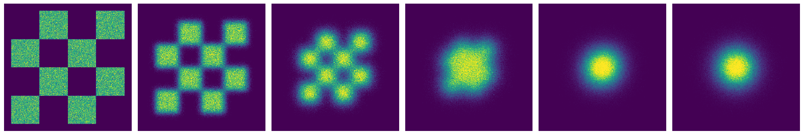
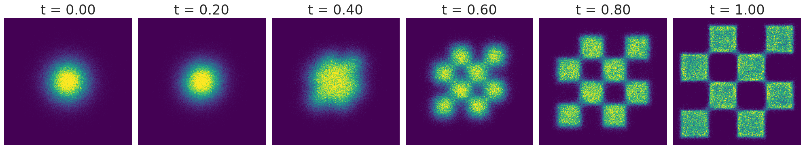
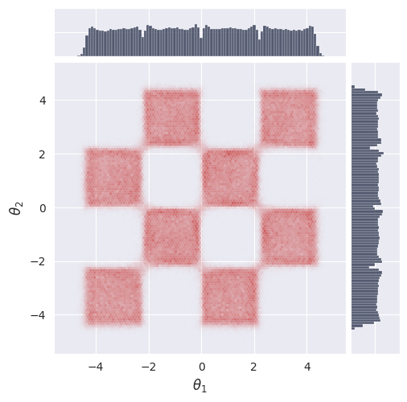
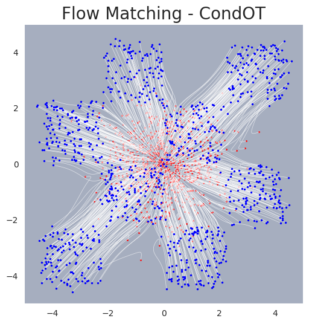

Flow Matching 2D Unconditional Example#

This notebook demonstrates how to train and sample from a flow-matching model on a 2D toy dataset using JAX and Flax. We will cover data generation, model definition, training, sampling, and density estimation using the pipeline utility.
1. Environment Setup#
In this section, we set up the notebook environment, import required libraries, and configure JAX for CPU or GPU usage.
try: #check if we are using colab, if so install all the required software
import google.colab
colab=True
except:
colab=False
if colab: # you may have to restart the runtime after installing the packages
!uv pip install --quiet "gensbi[cuda12,examples]"
!git clone --depth 1 https://github.com/aurelio-amerio/GenSBI-examples
%cd GenSBI-examples/examples/NDE
fatal: destination path 'GenSBI-examples' already exists and is not an empty directory.
/content/GenSBI-examples/examples/NDE
# Set training and model restoration flags
overwrite_model = False
restore_model = True # Use pretrained model if available
train_model = False # Set to True to train from scratch
Library Imports and JAX Backend Selection#
# Import libraries and set JAX backend
import os
os.environ['JAX_PLATFORMS']="cuda" # select cpu instead if no gpu is available
# os.environ['JAX_PLATFORMS']="cpu"
from flax import nnx
import jax
import jax.numpy as jnp
import optax
import numpy as np
# Visualization libraries
import matplotlib.pyplot as plt
from matplotlib import cm
# Specify the checkpoint directory for saving/restoring models
import orbax.checkpoint as ocp
checkpoint_dir = f"{os.getcwd()}/checkpoints/flow_matching_2d_example"
import os
os.makedirs(checkpoint_dir, exist_ok=True)
if overwrite_model:
checkpoint_dir = ocp.test_utils.erase_and_create_empty(checkpoint_dir)
2. Data Generation#
We generate a synthetic 2D dataset using JAX. This section defines the data generation functions and visualizes the data distribution.
# Define a function to generate 2D box data using JAX
import jax
import jax.numpy as jnp
from jax import random
from functools import partial
import grain
@partial(jax.jit, static_argnums=[1]) # type: ignore
def make_boxes_jax(key, batch_size: int = 200):
"""
Generates a batch of 2D data points similar to the original PyTorch function
using JAX.
Args:
key: A JAX PRNG key for random number generation.
batch_size: The number of data points to generate.
Returns:
A JAX array of shape (batch_size, 2) with generated data,
with dtype float32.
"""
# Split the key for different random operations
keys = jax.random.split(key, 3)
x1 = jax.random.uniform(keys[0],batch_size) * 4 - 2
x2_ = jax.random.uniform(keys[1],batch_size) - jax.random.randint(keys[2], batch_size, 0,2) * 2
x2 = x2_ + (jnp.floor(x1) % 2)
data = 1.0 * jnp.concatenate([x1[:, None], x2[:, None]], axis=1) / 0.45
return data
# # Infinite data generator for training batches
# @partial(jax.jit, static_argnums=[1]) # type: ignore
# def inf_train_gen(key, batch_size: int = 200):
# x = make_boxes_jax(key, batch_size)
# return x
batch_size = 256
data = make_boxes_jax(jax.random.PRNGKey(0), int(1e6))
train_dataset_grain = (
grain.MapDataset.source(np.array(data)[...,None])
.shuffle(42)
.repeat()
.to_iter_dataset()
)
performance_config = grain.experimental.pick_performance_config(
ds=train_dataset_grain,
ram_budget_mb=1024 * 4,
max_workers=None,
max_buffer_size=None,
)
train_dataset_batched = train_dataset_grain.batch(batch_size).mp_prefetch(
performance_config.multiprocessing_options
)
train_iter = iter(train_dataset_batched)
data_val = make_boxes_jax(jax.random.PRNGKey(1), 1000)
val_dataset_batched = (
grain.MapDataset.source(np.array(data_val)[...,None])
.shuffle(42)
.repeat()
.to_iter_dataset()
.batch(512)
)
# Visualize the generated data distribution
samples = np.array(data)
H=plt.hist2d(samples[:,0], samples[:,1], 300, range=((-5,5), (-5,5)))
cmin = 0.0
cmax = jnp.quantile(jnp.array(H[0]), 0.99).item()
norm = cm.colors.Normalize(vmax=cmax, vmin=cmin)
_ = plt.hist2d(samples[:,0], samples[:,1], 300, range=((-5,5), (-5,5)), norm=norm, cmap="viridis")
# set equal ratio of axes
plt.gca().set_aspect('equal', adjustable='box')
plt.show()

from gensbi.flow_matching.path.scheduler import CondOTScheduler
from gensbi.flow_matching.path import AffineProbPath
scheduler = CondOTScheduler()
path = AffineProbPath(scheduler)
nsamples = 500_000
key = jax.random.PRNGKey(42)
x_0 = jax.random.normal(key, (nsamples,2))
x_1 = make_boxes_jax(key, 500_000)
x_ts = []
ts = np.linspace(1,0,6)
for t in ts:
sample = path.sample(x_0, x_1, np.repeat(t,x_0.shape[0]))
x_ts.append(sample.x_t)
fig, axs = plt.subplots(1, 6, figsize=(20,20))
for i in range(6):
data = x_ts[i]
H = axs[i].hist2d(data[:,0], data[:,1], 300, range=((-5,5), (-5,5)))
cmin = 0.0
cmax = jnp.quantile(jnp.array(H[0]), 0.99).item()
norm = cm.colors.Normalize(vmax=cmax, vmin=cmin)
_ = axs[i].hist2d(data[:,0], data[:,1], 300, range=((-5,5), (-5,5)), norm=norm, cmap="viridis")
axs[i].set_aspect('equal')
axs[i].axis('off')
# axs[i].set_title('t = %.2f' % (T[i]),fontsize=24)
plt.tight_layout()
plt.savefig("flow_matching_unconditional_forward.png", dpi=300, bbox_inches="tight")
plt.show()

3. Model and Loss Definition#
We define the velocity field model (an MLP), the loss function, and the optimizer for training the flow-matching model.
# Import flow matching components and utilities
from gensbi.recipes import UnconditionalPipeline
from gensbi.core import FlowMatchingMethod
# Define the MLP velocity field model
class MLP(nnx.Module):
def __init__(self, input_dim: int = 2, hidden_dim: int = 128, *, rngs: nnx.Rngs):
self.input_dim = input_dim
self.hidden_dim = hidden_dim
din = input_dim + 1
self.linear1 = nnx.Linear(din, self.hidden_dim, rngs=rngs)
self.linear2 = nnx.Linear(self.hidden_dim, self.hidden_dim, rngs=rngs)
self.linear3 = nnx.Linear(self.hidden_dim, self.hidden_dim, rngs=rngs)
self.linear4 = nnx.Linear(self.hidden_dim, self.hidden_dim, rngs=rngs)
self.linear5 = nnx.Linear(self.hidden_dim, self.input_dim, rngs=rngs)
def __call__(self, t: jax.Array, obs: jax.Array, **kwargs):
assert obs.ndim == 3, f"Input obs must have shape (batch_size, input_dim, 1), got {obs.shape}"
t = jnp.atleast_1d(t)
x = jnp.squeeze(obs, axis=-1)
if t.ndim<2:
t = t[..., None]
t = jnp.broadcast_to(t, (x.shape[0], t.shape[-1]))
h = jnp.concatenate([x, t], axis=-1)
x = self.linear1(h)
x = jax.nn.gelu(x)
x = self.linear2(x)
x = jax.nn.gelu(x)
x = self.linear3(x)
x = jax.nn.gelu(x)
x = self.linear4(x)
x = jax.nn.gelu(x)
x = self.linear5(x)
return x[...,None]
# Initialize the velocity field model
hidden_dim = 512
# velocity field model init
model = MLP(input_dim=2, hidden_dim=hidden_dim, rngs=nnx.Rngs(0))
training_config = UnconditionalPipeline.get_default_training_config()
training_config["checkpoint_dir"] = checkpoint_dir
training_config["nsteps"] = 100_000
method = FlowMatchingMethod()
pipeline = UnconditionalPipeline(model,
train_dataset_batched,
val_dataset_batched,
2,
method=method,
training_config=training_config)
# Restore the model from checkpoint if requested
if restore_model:
pipeline.restore_model()
WARNING:absl:CheckpointManagerOptions.read_only=True, setting save_interval_steps=0.
WARNING:absl:CheckpointManagerOptions.read_only=True, setting create=False.
WARNING:absl:Given directory is read only=/content/GenSBI-examples/examples/NDE/checkpoints/flow_matching_2d_example
WARNING:absl:CheckpointManagerOptions.read_only=True, setting save_interval_steps=0.
WARNING:absl:CheckpointManagerOptions.read_only=True, setting create=False.
WARNING:absl:Given directory is read only=/content/GenSBI-examples/examples/NDE/checkpoints/flow_matching_2d_example/ema
Restored model from checkpoint
model_params = nnx.state(pipeline.model, nnx.Param)
total_params = sum(np.prod(x.shape) for x in jax.tree_util.tree_leaves(model_params))
print(f"Total model parameters: {total_params}")
Total model parameters: 791042
4. Training Loop#
This section defines the training and validation steps, and runs the training loop if enabled. Early stopping and learning rate scheduling are used for efficient training.
if train_model:
# Train the model
pipeline.train(nnx.Rngs(0))
5. Sampling from the Model#
In this section, we sample trajectories from the trained flow-matching model and visualize the results at different time steps.
sample the model#
key = jax.random.PRNGKey(42)
nplots=6
T = jnp.linspace(0,1,nplots) # sample times
sol = pipeline.sample(key, nsamples=500_000, time_grid=T)
import seaborn as sns
sns.set_style("darkgrid")
# Visualize the sampled trajectories at different time steps
sol = np.array(sol) # convert to numpy array
T = np.array(T) # convert to numpy array
fig, axs = plt.subplots(1, nplots, figsize=(20,20))
for i in range(nplots):
H = axs[i].hist2d(sol[i,:,0,0], sol[i,:,1,0], 300, range=((-5,5), (-5,5)))
cmin = 0.0
cmax = jnp.quantile(jnp.array(H[0]), 0.99).item()
norm = cm.colors.Normalize(vmax=cmax, vmin=cmin)
_ = axs[i].hist2d(sol[i,:,0,0], sol[i,:,1,0], 300, range=((-5,5), (-5,5)), norm=norm, cmap="viridis")
axs[i].set_aspect('equal')
axs[i].axis('off')
axs[i].set_title('t = %.2f' % (T[i]),fontsize=24)
plt.tight_layout()
plt.savefig("flow_matching_unconditional.png", dpi=300, bbox_inches="tight")
# plt.savefig("flow_matching_unconditional.pdf", dpi=300, bbox_inches="tight")
plt.show()

6. Marginal and Trajectory Visualization#
We visualize the marginal distributions and sample trajectories from the model.
# Import plotting utility for marginals
from gensbi.utils.plotting import plot_marginals
# Plot the marginal distribution of the final samples
plot_marginals(sol[-1,...,0], plot_levels=False, gridsize=100, backend="seaborn")
plt.show()

# Sample and visualize trajectories with finer time resolution
batch_size = 1000
T = jnp.linspace(0,1,50) # sample times
sol = pipeline.sample(key, nsamples=batch_size, time_grid=T)
# Import plotting utility for trajectories
from gensbi.utils.plotting import plot_trajectories
# Plot sampled trajectories
fig, ax = plot_trajectories(sol[...,0])
plt.grid(False)
plt.xlim(-5,5)
plt.ylim(-5,5)
plt.title("Flow Matching - CondOT", fontsize=20)
plt.savefig("flow_matching_unconditional_trajectories.png", dpi=300, bbox_inches="tight")
plt.show()
